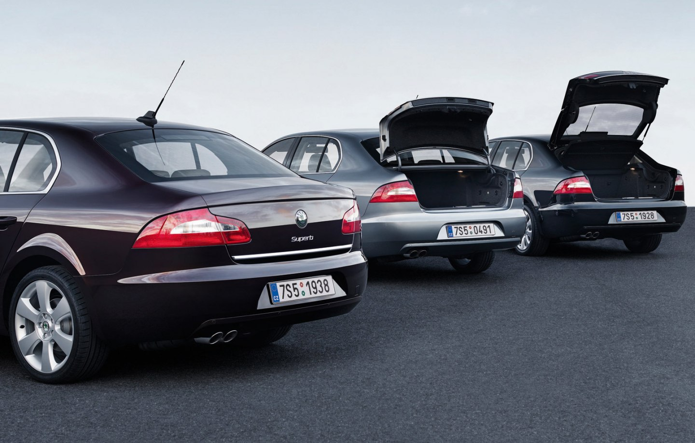
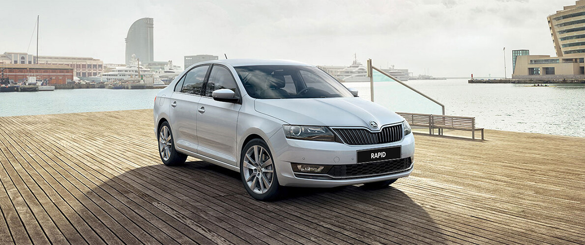
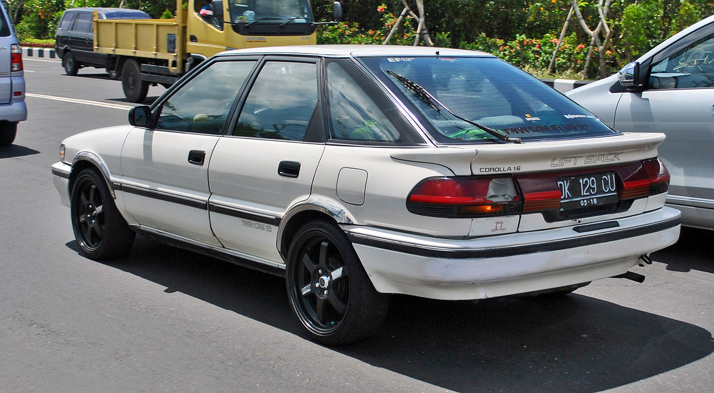
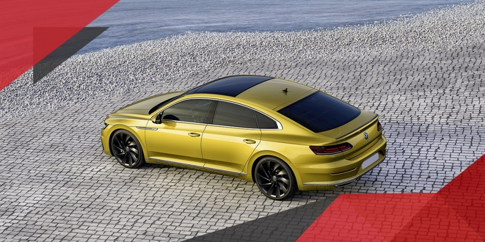
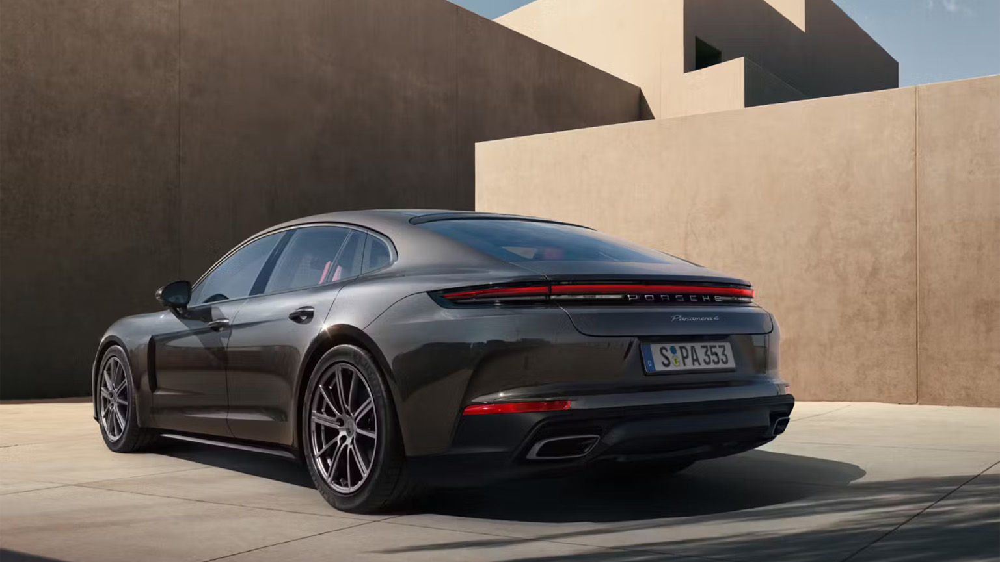

Кузов ЛИФТБЕК

Лифтбек (Liftback) – это тип кузова, который внешне похож на седан, но конструктивно ближе к хэтчбеку. Главное отличие лифтбека от седана в том, что его задняя дверь открывается вместе с задним стеклом, как у хэтчбека, но при этом форма кузова остаётся вытянутой, как у седана. Это делает лифтбек более практичным и удобным для перевозки грузов.
Основные характеристики:
- Форма кузова: Длинный, обтекаемый силуэт, похожий на седан.
- Количество дверей: 5 (4 боковые + крышка багажника, поднимающаяся вместе со стеклом).
- Компоновка: Чаще передний привод, реже полный или задний.
- Багажник: Объёмный, доступ к нему удобнее, чем в седане.
- Размеры: От 4,3 до 5 метров в длину (зависит от класса).
Классификация лифтбеков:

Skoda Rapid

Toyota Corolla Liftback
- Компактные лифтбеки – городские модели с хорошей экономичностью (Skoda Rapid, Kia Ceed).
- Среднеразмерные лифтбеки – универсальные автомобили для города и трассы (Skoda Octavia, Toyota Corolla Liftback).
- Бизнес-класс – комфортные и престижные модели (Audi A5 Sportback, Volkswagen Arteon).
- Спортивные лифтбеки – динамичные версии с мощными двигателями (Porsche Panamera, Audi RS5 Sportback, Tesla Model S).

Volkswagen Arteon

Porsche Panamera
Преимущества:
- Большой багажник – удобный доступ и увеличенный объём при сложенных сиденьях.
- Лучше аэродинамика, чем у хэтчбека – повышенная устойчивость на высокой скорости.
- Практичность – сочетает удобство хэтчбека с элегантностью седана.
- Комфортный салон – многие модели имеют просторный второй ряд.
Недостатки:
- Хуже шумоизоляция, чем у седана, так как багажник не отделён перегородкой.
- Более дорогие модели в сравнении с аналогичными седанами.
- Меньший выбор в массовом сегменте, так как лифтбеки не так популярны, как седаны или кроссоверы.
Лифтбек – это отличное решение для тех, кто хочет автомобиль с элегантным дизайном седана, но с практичностью хэтчбека. Особенно популярны лифтбеки среди водителей, которым нужен вместительный багажник, но при этом важен стиль и аэродинамика.